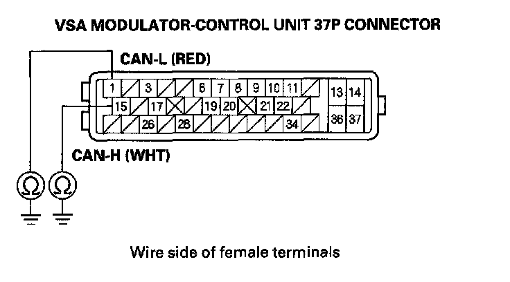
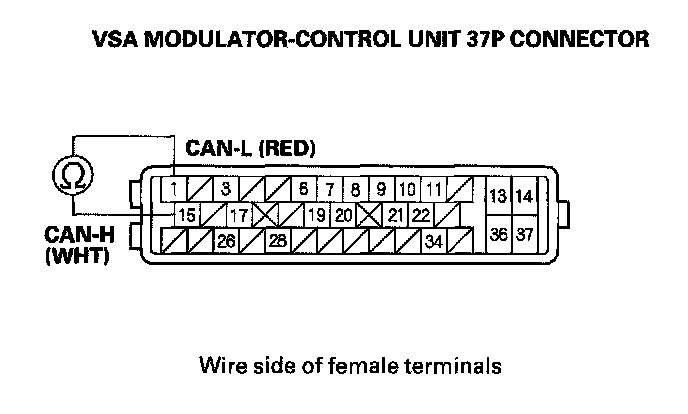
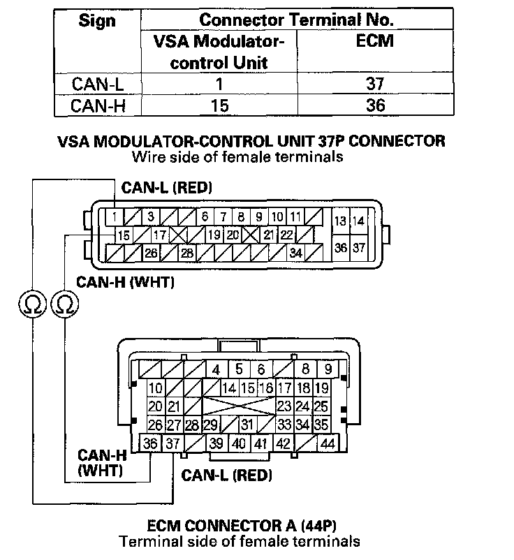

DTC 86-01
DTC 86-01: F-CAN Bus-off Malfunction1. Turn the ignition switch ON (II).
2. Clear the DTC with the HDS.
3. Turn the ignition switch OFF, then turn it ON (II) again.
4. Check for DTCs with the HDS.
Is DTC 86-01 indicated?
YES - Go to step 5.
NO - Intermittent failure, the system is OK at this time. Check for loose terminals between ECM connector A (44P) and the VSA modulator-control unit 37P connector. Refer to intermittent failures troubleshooting.
5. Turn the ignition switch OFF.
6. Short the SCS line with the HDS.
7. Disconnect ECM connector A (44P).
8. Disconnect the HDS from the data link connector (DLC).
9. Disconnect the VSA modulator-control unit 37P connector.
10. Check for continuity between VSA modulator-control unit 37P connector terminals No. 1 and No. 15 and body ground individually.

Is there continuity?
YES - Troubleshoot the DLC circuit. If it is corresponded, repair the short to body ground on the appropriate wire.
NO - Go to step 11.
11. Check for continuity between VSA modulator-control unit 37P connector terminals No. 1 and No. 15.

Is there continuity?
YES - Troubleshoot the DLC circuit. If it is corresponded, repair short in the wire between VSA modulator-control unit 37P connector terminals No. 1 (CAN-L line) and No. 15 (CAN-H line).
NO - Go to step 12.
12. Check for continuity between the VSA modulator-control unit 37P connector terminal and ECM connector A (44P) terminal (see table).

Is there continuity?
YES - Check for loose terminals in the VSA modulator-control unit 37P connector. If necessary, substitute a known-good VSA modulator-control unit, and retest.
NO - Repair open in the wire between the ECM and the VSA modulator-control unit.